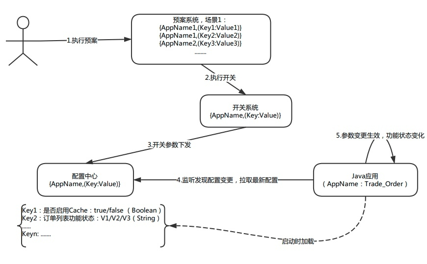

- 00 开篇词 带给你不一样的运维思考.md
- 01 为什么Netflix没有运维岗位？.md
- 02 微服务架构时代，运维体系建设为什么要以应用为核心？.md
- 03 标准化体系建设（上）：如何建立应用标准化体系和模型？.md
- 04 标准化体系建设（下）：如何建立基础架构标准化及服务化体系？.md
- 05 如何从生命周期的视角看待应用运维体系建设？.md
- 06 聊聊CMDB的前世今生.md
- 07 有了CMDB，为什么还需要应用配置管理？.md
- 08 如何在CMDB中落地应用的概念？.md
- 09 如何打造运维组织架构？.md
- 10 谷歌SRE运维模式解读.md
- 11 从谷歌CRE谈起，运维如何培养服务意识？.md
- 12 持续交付知易行难，想做成这事你要理解这几个关键点.md
- 13 持续交付的第一关键点：配置管理.md
- 14 如何做好持续交付中的多环境配置管理？.md
- 15 开发和测试争抢环境？是时候进行多环境建设了.md
- 16 线上环境建设，要扛得住真刀真枪的考验.md
- 17 人多力量大vs.两个披萨原则，聊聊持续交付中的流水线模式.md
- 18 持续交付流水线软件构建难吗？有哪些关键问题？.md
- 19 持续交付中流水线构建完成后就大功告成了吗？别忘了质量保障.md
- 20 做持续交付概念重要还是场景重要？看笨办法如何找到最佳方案.md
- 21 极端业务场景下，我们应该如何做好稳定性保障？.md
- 22 稳定性实践：容量规划之业务场景分析.md
- 23 稳定性实践：容量规划之压测系统建设.md
- 24 稳定性实践：限流降级.md
- 25 稳定性实践：开关和预案.md
- 26 稳定性实践：全链路跟踪系统，技术运营能力的体现.md
- 27 故障管理：谈谈我对故障的理解.md
- 28 故障管理：故障定级和定责.md
- 29 故障管理：鼓励做事，而不是处罚错误.md
- 30 故障管理：故障应急和故障复盘.md
- 31 唇亡齿寒，运维与安全.md
- 32 为什么蘑菇街会选择上云？是被动选择还是主动出击？.md
- 33 为什么混合云是未来云计算的主流形态？.md
- 35 以绝对优势立足：从CDN和云存储来聊聊云生态的崛起.md
- 36 量体裁衣方得最优解：聊聊页面静态化架构和二级CDN建设.md
- 37 云计算时代，我们所说的弹性伸缩，弹的到底是什么？.md
- 38 我是如何走上运维岗位的？.md
- 39 云计算和AI时代，运维应该如何做好转型？.md
- 40 运维需要懂产品和运营吗？.md
- 41 冷静下来想想，员工离职这事真能防得住吗？.md
- 42 树立个人品牌意识：从背景调查谈谈职业口碑的重要性.md
- 划重点：赵成的运维体系管理课精华（一）.md
- 划重点：赵成的运维体系管理课精华（三）.md
- 划重点：赵成的运维体系管理课精华（二）.md
- 新书 《进化：运维技术变革与实践探索》.md
- 特别放送 我的2019：收获，静静等待.md
- 结束语 学习的过程，多些耐心和脚踏实地.md
25 稳定性实践：开关和预案
在稳定性保障中，限流降级的技术方案，是针对服务接口层面的，也就是服务限流和服务降级。这里还有另外一个维度，就是业务维度，所以今天我们就从业务降级的维度来分享，也就是开关和预案。
如何理解开关和预案
开关，这个概念更多是业务和功能层面的，主要是针对单个功能的启用和停止进行控制，或者将功能状态在不同版本之间进行切换。
在业务层面，就像我们前面经常提到的大促场景案例，我们会关闭掉很多非核心功能，只保留交易链路的核心功能。比如我们认为商品评论是非核心功能，这时就会通过开关推送这种方案将这个功能关闭。当用户访问商品详情页时，这个接口就不再被调用，从用户角度来说，就是在大促峰值时刻看不到所浏览商品的评论列表。
在功能层面，我们技术架构中会使用缓存技术，但是要考虑到缓存有可能也会出现故障，比如不可访问，或者数据错乱异常等状况，这时我们就会考虑旁路掉缓存，直接将请求转到数据库这一层。
这里有两种做法：一种做法是通过我们上一篇介绍到的降级手段，也就是我们常说的熔断，自动化地旁路；另一种做法，比如在数据异常情况下，请求是正常的，但是数据是有问题的，这时就无法做到自动化旁路，就要通过主动推送开关的方式来实现。
预案，可以理解为让应用或业务进入到某种特定状态的复杂方案执行，这个方案最终会通过开关、限流和降级策略这些细粒度的技术来实现，是这些具体技术方案的场景化表现。
我们还是接着上面的这个案例来讨论。因为每个业务或应用都会有自己的开关配置，而且数量会有很多，如果在大促前一个个推送，效率就会跟不上，所以我们就会针对某个应用的具体场景，提供批量操作的手段，通过预案场景将同一应用，甚至多个应用的开关串联起来。
比如上面提到的商品详情页，我们不仅可以关闭商品评论，还可以关闭商品收藏提示、买家秀、店铺商品推荐、同类型商品推荐以及搭配推荐等等。有了场景化的预案，管理和维护起来就会更容易。
除了业务层面的预案，我们还可以将预案应用到应急场景下，比如上面提到的缓存故障异常。在真实场景下，要考虑得更全面，比如缓存能够支撑的业务访问量是要远远大于数据库的，这时我们就要做功能降级，这就要考虑数据库是否能够支撑住这么大的请求量（通常情况下肯定是支撑不住的）。所以，遇到这种场景，我们首要考虑的是限流，先将业务流量限掉三分之一甚至是一半，然后再将功能降级到数据库上。
这样就又涉及到多种策略的串行执行。如果没有预案都是单个执行的话，效率肯定会低，而且还可能涉及到多个应用都会执行相同的业务降级策略，这时就必须要有预案来统一管理，提前梳理好哪些应用需要在这种场景下执行对应的开关、限流和降级策略。
技术解决方案
技术方案上并不复杂，开关的字段主要以Key-Value方式管理，并从应用维度，通过应用名管理起来，这个对应关系就可以放到统一的控制台中管理。
下图是整个开关和预案管理，以及推送的示意图，我们一起分步骤看一下。

1.开关管理
通过上述我们所说的Key-Value方式保存，与代码中的具体Field字段对应起来。这里就又会涉及到我们上篇内容中讲到的Spring的AOP和注解技术。
如下面代码所示，我们通过注解方式定义了一个开关testKey，它与控制台中配置的Key相对应，并获取对应的Value取值，在业务运行阶段，我们就可以根据这个值，来决定业务执行逻辑，下面是简化的示例。
@AppSwitcher(key="key1",valueDes = "Boolean类型")
private Boolean key1;
代码中直接调用AppName对应的开关配置，进行不同业务逻辑的实现：
Boolean key1 = MoguStableSwitch.isStableSwitchOn("key1");
if (key1)
{
//开关打开时业务逻辑实现
}else
{
//开关关闭时业务逻辑实现
}
2.开关推送
当在控制台上修改开关值后，会推送到微服务的配置中心做持久化，这样当应用下次重启时依然可以获取到变更后的值。还有另外一种方式，就是通过HTTP的方式推送，这种情况的应用场景是，当第一种情况失败时，为了让开关快速生效预留的第二个接口。
3.配置变更
应用中引入的开关SDK客户端会监听对应配置的变更，如果发生变化，就会马上重新获取，并在业务运行时生效。
4.预案执行
就是多个开关策略的串行执行，会重复上面这几个关键步骤。
关于开关和预案的内容，我们今天就介绍到这里。留一个问题，我们在上篇文章中介绍到限流降级方案的难点，请你思考一下，我们今天讲的开关预案这个内容，可能会遇到哪些难点呢？欢迎留言与我讨论。
如果今天的内容对你有帮助，也欢迎你分享给身边的朋友，我们下期见！
© 2019 - 2023 Liangliang Lee. Powered by gin and hexo-theme-book.